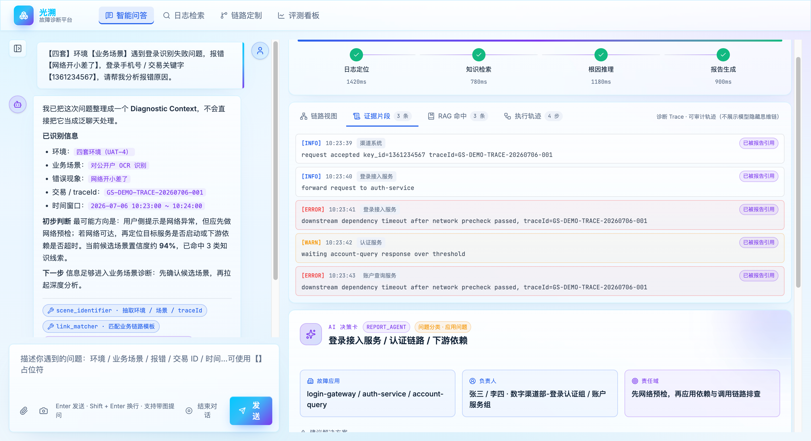

手机银行登录横跨业务应用、服务调用、数据库与网络策略。
统一报错不等于网络根因。用户只有报错截图、环境和关键字，不知道问题出在应用、网络、系统还是业务链路。光溯先把现象还原成可诊断上下文，再沿业务链路逐层取证。
自然语言、截图、报错文案和关键字段。
环境、应用、节点、时间窗口与检索关键字。
诊断回放
先把一句模糊报错变成可确认的诊断槽位
系统先识别意图并提取场景、环境、现象、定位主键与时间窗口；缺失或低置信字段通过追问补齐。只有用户确认关键槽位后，系统才形成诊断任务并沿链路取证。
用户输入“四套环境手机银行登录报错网络开小差”，附定位关键字
→
意图识别 + 槽位抽取业务场景类；环境=四套、现象=登录失败、定位主键=已提取、时间=待补充
→
RAG-1 快速响应给出初步证据摘要与缺失字段提示
候选场景识别返回 Top 5 候选场景
→
用户确认“手机银行登录”及关键槽位记录字段来源和确认状态，形成统一诊断上下文
确认后的深度路径
匹配 26 节点链路关联节点、接口与日志路径
定位异常 + RAG-2账户核查节点 RpcTimeout；命中超时排查知识卡
服务状态检查实例、注册、接口响应与线程池未见异常
触发网络诊断TCP 间歇超时、18% 丢包与 P95 高延迟
其他分支留痕系统与数据库诊断因无证据保持跳过
证据约束报告跨层证据、结论范围与人工复核
证据链
一次回放中，哪些证据被使用，哪些分支被跳过
网络、系统和数据库不是默认全部调用；专项能力按证据触发，未触发分支也作为诊断结果保留。
| 场景确认 | 用户确认“手机银行登录”，系统形成包含环境、现象、定位主键、时间窗口与候选链路的诊断上下文。 |
|---|---|
| 链路取证 | 匹配 26 节点匿名业务拓扑，沿链路检索日志，定位账户核查节点 RPC 调用超时，耗时 5000ms。 |
| 深度检索 | 基于异常节点与 RpcTimeout 错误模式，命中 Dubbo 客户端超时排查知识卡，补充处置方向。 |
| 服务检查 | 通过 MCP adapter 检查目标服务的实例、注册、接口响应与线程池，四项服务状态未发现异常。 |
| 网络诊断 | 服务侧检查结果与 RPC 超时证据满足跨层路由条件，触发网络诊断；匿名探测发现 TCP 间歇超时、18% 丢包与 P95 高延迟。 |
| 分支留痕 | 网络诊断已触发；系统与数据库诊断因缺少对应错误证据保持跳过，并在 Trace 中记录原因。 |
| 报告边界 | 报告引用 RPC 日志、服务状态 MCP 与网络探测三层证据，将匿名样本中的问题收敛为网络链路质量异常；不由 RPC 超时这一条证据直接断言网络根因。 |
界面证据
用户视图与专家证据分层呈现
左侧持续对话，右侧展示任务进度、链路、决策卡、证据与诊断结果。

回放步骤
从输入到报告的 6 个可复核节点
流程图展示全貌；这里保留本案例真正改变判断的节点。
- 识别意图并形成槽位状态，记录环境、现象、定位主键以及仍需补齐的字段。
- 确认“手机银行登录”场景及关键槽位，形成统一诊断上下文。
- 沿 26 个节点定位 RPC 超时，提取异常日志并命中对应排查知识。
- 执行服务状态 MCP 检查，实例、注册、接口响应与线程池未发现异常。
- 触发网络诊断并保留跳过分支，发现 TCP 间歇超时、18% 丢包与 P95 高延迟；系统与数据库保持跳过。
- 合并跨层证据并生成报告，将匿名样本中的问题收敛到网络链路质量异常，并保留结论范围。
继续深读
看主流程与质量门禁
架构页说明主流程和条件 Skills；评测页核验契约、Trace 与失败归因。